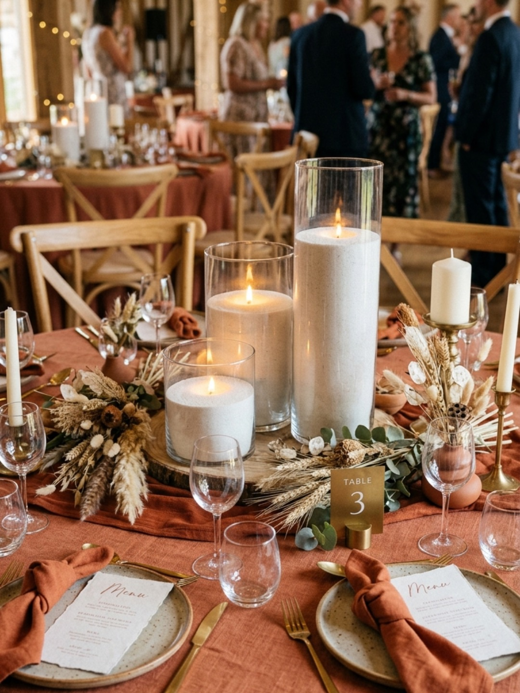

Do Wedding Candles Fit in a Normal Car?
April 19, 2026
Yes, this is a very common question, and it is a sensible one to ask before pickup. Many wedding candle hire orders do fit in a normal car, depending on how many candles you have booked and how much usable space your car has.
At Lustre Hire, orders are packed for practical pickup and transport from Bull Creek, so the process is designed to feel manageable for DIY couples. In many cases, a standard car is perfectly fine. For larger setups, though, a bigger vehicle can make the day much easier.
Working through the logistics? You can check availability and plan your pickup here.
The short answer
Smaller to mid-sized candle orders often fit in a standard sedan or hatchback, especially if you have access to both the boot and back seat. Larger orders, fuller wedding setups, or anything spread across more boxes may be better suited to an SUV, wagon, ute, or even a two-car pickup.
It is less about whether the candles are impossible to transport in a normal car and more about what will feel comfortable, stable, and easy to load on the day.
What affects whether the candles will fit
A few practical details make the biggest difference when you are working out what sort of vehicle you need.
Total candle quantity: The more candles you order, the more boxes or crates you are likely to be taking home.
How the order is packed: Orders are packed for practical transport, but a larger quantity will naturally take up more room across the boot and seats.
The shape of your car: A hatchback or wagon can sometimes be easier to load than a sedan because of the opening and usable cargo space.
Fold-down back seats: If your back seats can fold flat, that usually gives you much more flexibility.
Passengers: If you are bringing multiple people in the car, that reduces the space available for boxes.
What a normal car can usually manage
Many couples can collect smaller and moderate candle orders in a standard car without much trouble, particularly if the boot is cleared out and the back seat is available as well.
For example, if you are styling a smaller wedding, a sweetheart table, or a moderate reception setup, a normal sedan or hatchback is often enough. That is especially true if you are travelling with one other person rather than a full car of passengers.
We do not want to overpromise, because every vehicle is a bit different, but for plenty of DIY weddings, pickup in a normal car is entirely realistic.
When a bigger car may be easier
If you are planning a fuller candlelit wedding look with more tables and more feature areas, a bigger vehicle may simply make loading and unloading easier. An SUV, wagon, ute, or second car can give you more breathing room and make the trip feel less cramped.
This is often the more comfortable option if you have a higher candle count, want to keep more space around the boxes, or would just prefer a less stressful pickup experience.
Lifting and handling
One of the most practical things to plan for is weight. Each candle box is usually around 25 to 30 kilos, so while the boxes are manageable, they are not something most people would want to lift awkwardly on their own.
It helps a lot to bring one extra person with you to assist with carrying and loading the boxes comfortably. That small bit of planning can make pickup feel much smoother.
Tips for a smoother pickup
If you want pickup to feel straightforward, these small prep steps can make a big difference:
• Clear your boot before pickup
• Fold seats down if your car allows it
• Avoid bringing unnecessary passengers
• Bring one extra person to help carry and load
• Plan your pickup time so you are not rushed
• Keep the candles upright during transport
Lustre Hire standard hire includes pickup the day before your event and return the day after, which gives you a practical window to collect, style, and return your order without feeling too squeezed for time.
If you want a quick overview of what happens after the event, our How to Return page explains the return side simply.
Final reassurance
For many couples, the pickup side is easier than they first expect. Orders are packed with practical transport in mind, and many smaller to mid-sized bookings fit into a normal car depending on quantity and available space.
If you are not sure what your setup might involve, it can help to review how it works, then check your date, get a quote, and book online when you are ready. That gives you a clearer idea of quantity before pickup day arrives.
Ready to plan your pickup?
Check your date, get a quote, and work out a candle setup that feels easy to collect and return.
Check Availability